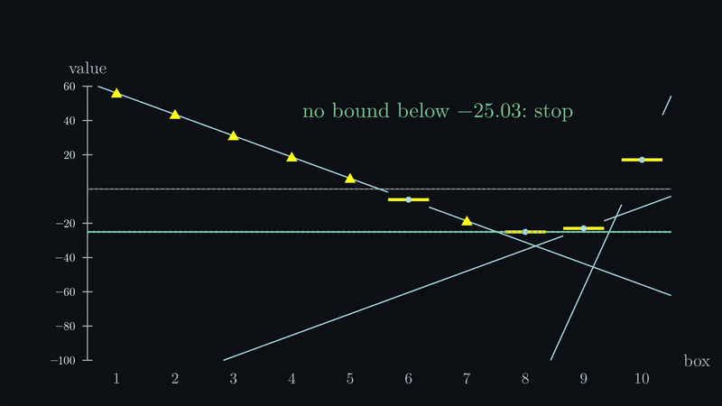
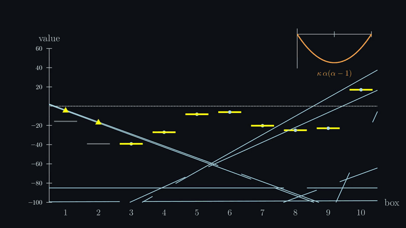
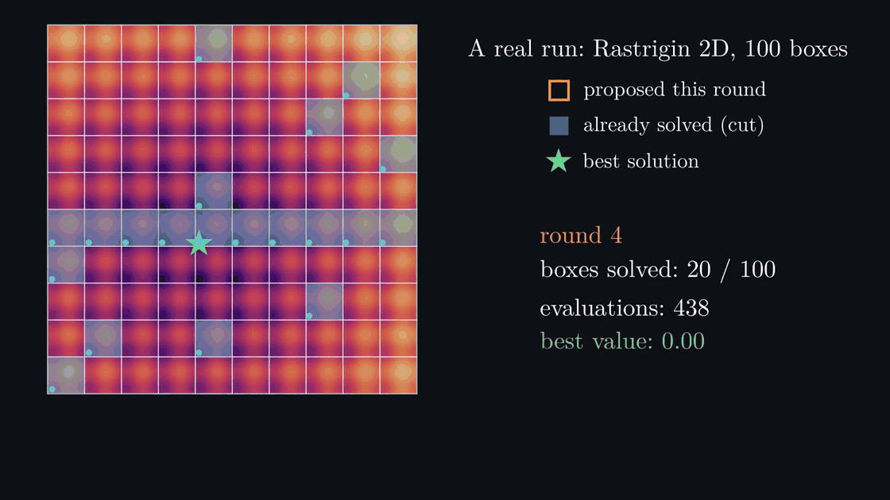

Choosing where to look in a multimodal landscape, one local solve at a time
Cut each axis into intervals; solve inside one box at a time. Boxes multiply, switches add.
Pressed on a wall, the multiplier λ says how fast the value drops beyond it.

Value + slope = a cut. Solve the box with the lowest bound; stop when none can beat the best.

Non-convex cuts lie. Lower them by κ, or sweep κ over parallel probes.

A real run, Rastrigin 2D, default settings, 4 probes per round: 0 after 154 evaluations, 20 of 100 boxes.
82.1
bracket compliance, vs 84.0 for MMA
789
evaluations vs 2,340 for multistart (5D)
10⁵ boxes
on 50 switches: Rastrigin 5D solved
It wins when the grid separates the valleys, and loses when it doesn’t.
gemseo-box-subdivision · pip install gemseo-box-subdivision · simoneconiglio.github.io/gemseo-box-subdivision